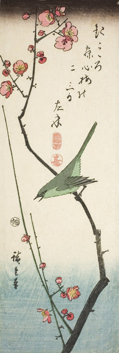

作品名 「梅に鶯」
花言葉 「上品」「高潔」「忍耐」「忠実」
梅
「上品」
梅の花の最盛期が2月とまだ寒さが厳しい時期のため、寒風が吹く中、凛と咲きほこる梅の姿からつけられました。「忍耐」もその情景から由来しています。また、「梅に鶯」ということわざは、「2つのものが調和している」「仲がよくとてもお似合いだ」「切っても切り離せないもの」という意味があります。
梅に鶯
歌川広重
歌川 広重は、江戸時代の浮世絵師。風景を描いた木版画で大人気の画家となり、ゴッホやモネなどの西洋の画家にも影響を与えた。歌川広重の作品は、ヨーロッパやアメリカでは、大胆な構図などとともに、青色、特に藍色の美しさで評価が高く、「ヒロシゲブルー」とも呼ばれる。ヒロシゲブルーは19世紀後半のフランスに発した印象派の画家や、アール・ヌーヴォーの芸術家らに影響を与えたとされ、当時ジャポニスムの流行を生んだ要因の一つともされている。
| 作品名 | 梅に鶯 |
| 作者 | 歌川広重 |
| 制作年 | 1844年〜1845年頃 |
| 種類 | 紙本木版多色刷り |
| 寸法 | 34.5×11.5cm |
| 所蔵 | 海の見える杜美術館 |